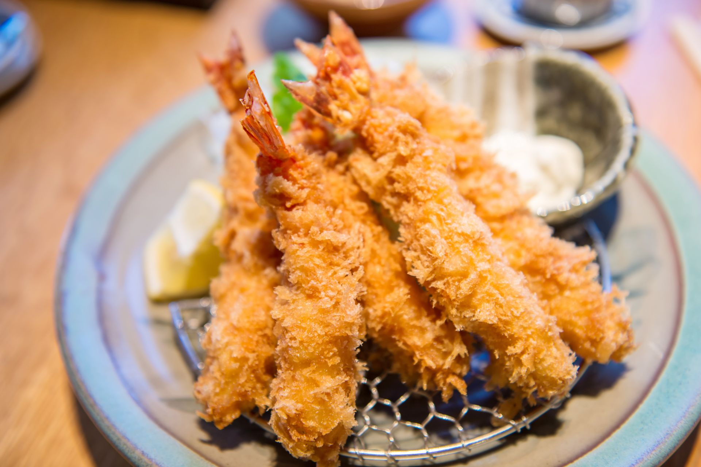
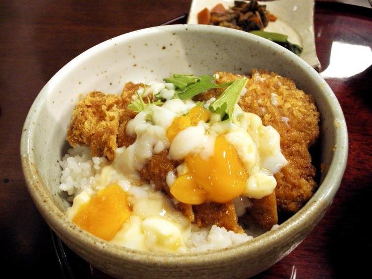
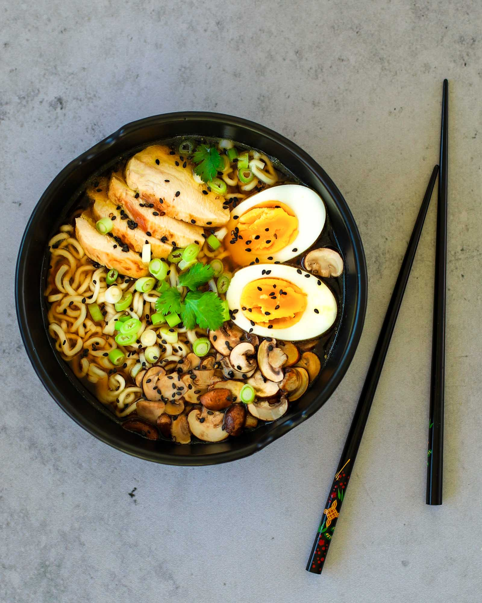

Si vous aimez les plats frits, les tempuras sont pour vous. Ces encas japonais s’apparentent à une sorte de beignet de légumes et de crevettes frit. Le tempura est l’une des spécialités culinaires japonaises difficiles à préparer lorsque vous débutez. Toutes sortes de légumes peuvent être transformées en tempura, comme les champignons, l’aubergine, le kabocha (potiron japonais), etc. Même si les crevettes sont les bases de ce plat typiquement japonais, il n’est pas rare de trouver des tempuras à base de volaille, de poisson assaisonné avec une sauce soja ou d’autres ingrédients locaux.

Très simple, un donburi est un grand bol de riz (don) sur lequel vous devez déposer la garniture de votre choix. C’est un plat chaud japonais très commun qui se compose généralement d’une garniture principale d’oignons et d’œuf. Le donburi se décline en plusieurs sortes dont les plus connus sont le tendon, le guydon, l’oaykodon, le katsudon, l’unagidon et le kaïsendon.

Le ramen est une pâte chinoise à base de blé. Il fait partie des nouilles japonaises très populaires dans la gastronomie japonaise. C’est aussi un des ingrédients parmi les moins chers au Japon. Ce plat typiquement japonais est généralement servi avec une sauce soja ou une soupe miso et d’autres plats japonais.